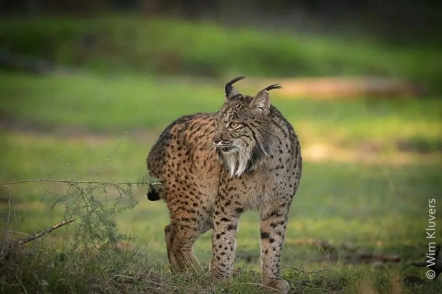

哺乳动物 · 动物界
伊比利亚猞猁 Lynx pardinus

伊比利亚半岛特有的濒危猫类，黄褐色毛皮上布满黑色斑点，脸侧有长长颊毛，食谱中兔类占比极高，经多年保育种群正在恢复。
- 分类
- 门脊索动物门纲哺乳纲目食肉目科猫科属猞猁属
- 栖息环境
- 地中海灌丛、圣栎林、橡树林与山地疏林
- 地理分布
- 西班牙西南部与葡萄牙的少数核心分布区
- 保护级别
- IUCN 易危（VU，2024 年由濒危下调）；CITES 附录Ⅰ
物种志
伊比利亚猞猁体长 60–80 cm，尾长 12–16 cm，体重约 9–15 kg，雄性略大。毛色黄褐至橙褐，全身散布黑色斑点，脸侧有长而蓬松的颊毛，耳尖具黑色簇毛，尾短、末端黑色，四肢修长，善跳跃。
它们仅分布于西班牙西南部和葡萄牙的灌丛、橡树林与山地，多在黄昏和夜间单独活动。食物以欧洲兔为主，可占食谱的八成以上，也捕食雉类、啮齿类和小型偶蹄类。每胎 1–4 仔，妊娠期约 63–73 天。20 世纪后期种群一度不足百只，经栖息地恢复、兔群重引入和圈养繁殖，2020 年代野生个体已恢复至约两千只，保护等级由濒危下调为易危。
形态与习性
- 食性欧洲兔为主，也捕食雉类、啮齿类与小型兽类
- 体长60–80 cm，尾长 12–16 cm
- 体重约 9–15 kg
- 繁殖妊娠期约 63–73 天，每胎 1–4 仔
- 活动节律黄昏与夜间活动，独居，领域性强
- 特点颊毛长而蓬松，全身黑斑，尾短
趣味知识
- 伊比利亚猞猁是欧洲最濒危的猫科动物之一，21 世纪初野外仅存约百只。
- 它的食谱高度依赖欧洲兔，兔群因疾病锐减曾直接导致猞猁数量崩溃。
- 经过圈养繁殖与野化放归，2024 年其保护等级由濒危下调为易危。